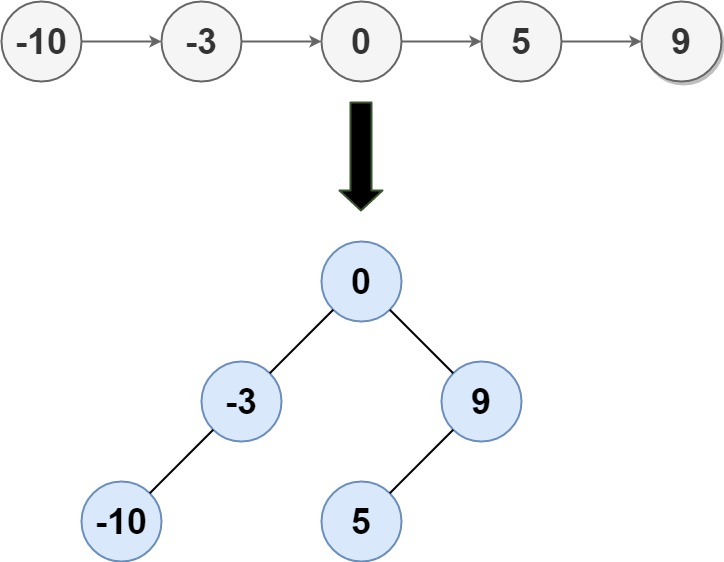

| Category | Difficulty | Likes | Dislikes |
|---|---|---|---|
| Algorithms | Medium | 7819 | 170 |
linked-list | divide-and-conquer | tree | binary-search-tree | binary-tree
google | facebook | amazon | bloomberg | microsoft | uber | apple | zenefits
Given the head of a singly linked list where elements are sorted in ascending order, convert it to a height-balanced binary search tree.
Example 1:

Input: head = [-10,-3,0,5,9]
Output: [0,-3,9,-10,null,5]
Explanation: One possible answer is [0,-3,9,-10,null,5], which represents the shown height balanced BST.Example 2:
Input: head = []
Output: []
Constraints:
head is in the range [0, 2 * 104].-105 <= Node.val <= 105